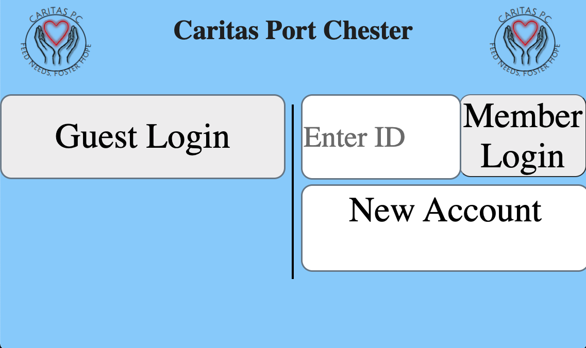

Worked with local food bank Caritas of Port Chester
This project was part of a class “Coding for a Cause” that I took my senior year of high school. Along with 5 of my friends who had also finished my high school’s CS curriculum, we spent a year building a sign-in and ordering system for a local food bank to keep track of their customers and help them better serve our community. This food bank was having trouble transitioning to handling their data online due to limited funds to hire a development team and outdated technology.
We built a website using NodeJS, PUG (HTML preprocessor), CSS, and used MongoDB to handle user information. Additionally, we learned about and implemented Scrum methodology. My main role on the project was front end design, but I also gained experience with backend and database work from one of my more experienced friends on the team. Having the website on an iPad in the food bank and seeing it working for the first time was extremely rewarding, and this was one of my favorite projects because of its real-world impact.